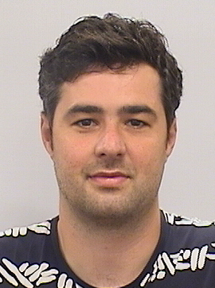

|

Contact information:
Sammy Khalife
Cornell Tech
Bloomberg Building
2 W Loop Rd, New York City
New York City, NY 10044
Email: khalife.sammy[AT]cornell[DOT]edu
I'm a postdoctoral fellow at Cornell Tech, mentored by Andrea Lodi. Previously, I was a postdoctoral fellow in the Department of Applied Mathematics and Statistics at Johns Hopkins University, mentored by Amitabh Basu. My current research interests are a mix of discrete optimization, theoretical deep learning, and data science. More specifically, I am interested in:
- Computational complexity aspects of Neural Networks: what are the precise numbers of layers and neurons required to compute a target function?
- Formal expressiveness of Graph Neural Networks and role of the activation function
- Discrete Optimization: Design of guaranteed optimization algorithms for training neural networks, and sample complexity aspects for learning properties of (and ideally solving) integer programs
- Applications of these tools in natural language processing (language models), bioinformatics (determining 3D-structure of proteins) and network science.
Teaching
Johns Hopkins University
Discrete Mathematics 553.171 (Fall 2021, 2022, Spring 2023) Numerical Linear Algebra 553.385 (Spring 2022) Course link
Ecole Polytechnique, France
Data Science Starter Program (2017-2019, Formation Big Data, EXED) Machine learning INF554 (2019, Teaching Assistant)
Saint-Joseph University, Beirut
Research Papers
Preprints and work in progress
(2024). Sample Complexity of Data-Driven Algorithm Design using Neural Networks. Joint work with Hongyu Cheng, Barbara Fiedorowicz and Amitabh Basu.
[arXiv]
Khalife, S. (2023). Graph Neural Networks with polynomial activations cannot express all GC2 queries.
[arXiv]
Khalife, S., Basu A. (2023). On the power of graph neural networks and the role of the activation function.
[arXiv]
Khalife, S., Ponty Y. Bulteau L. (Extended Version, 2021) Sequence graphs realizations and ambiguity in language models. (in revision).
[arXiv]
Refereed Publications
Khalife, S., Cheng, H., Basu A. (2023). Neural networks with linear threshold activations: structure and algorithms (Extended version). Mathematical Programming, 2023.
[arXiv]
Khalife, S., Basu A. (2022). Neural networks with linear threshold activations: structure and algorithms. In Integer Programming and Combinatorial Optimization (IPCO) 2022.
[arXiv]
Khalife, S., Gonçalves, D., Allouah Y., and Liberti L. (2021). Further results on latent discourse models and word embeddings. Journal of Machine Learning Research, 22, pp. 1-36, November 2021.
[Link]
Khalife, S., Gonçalves, D., and Liberti L. (2020). Distance geometry for word embeddings and applications. Journal of Computational Mathematics and Data Science.
[Link]
Khalife, S. Ponty, Y., and Bulteau L. (2021). Sequence graphs realizations and ambiguity in language models. In International Computing and Combinatorics Conference (COCOON21)
[Link]
Khalife, S., Malliavin T., and Liberti L. (2021). Secondary structure assignment of proteins in the absence of sequence information. Bioinformatics Advances, Volume 1, Issue 1, 2021.
[Link]
Khalife, S. (2020). Sequence graphs: characterization and counting of admissible elements. Cologne-Twente Workshop on Graphs and Combinatorial Optimization.
[Slides]
Khalife, S., Read, J., and Vazirgiannis, M. (2020). Structure and influence analysis of worldwide capitalistic ownership. Journal of Applied Network Science.
[Link]
Khalife, S., Liberti, L., and Vazirgiannis, M. (2019a). Geometry and analogies: a study and propagation method for word representations. In International Conference on Statistical Language and Speech Processing, pages 100–111. Springer
[Link]
Khalife, S. and Vazirgiannis, M. (2019). Scalable graph-based method for individual named entity identification. In Proceedings of the Thirteenth Workshop on Graph-Based Methods for Natural Language Processing (TextGraphs-13), pages 17–25
[Link]
Khalife, S., Read, J., and Vazirgiannis, M. (2019b). Empirical analysis of a global capital-ownership network. In International Conference on Complex Networks and Their Applications, pages 656–667. Springer
[Link]
Pallanca, O., Khalife, S., and Read, J. (2018). Detection of sleep spindles in NREM 2 sleep stages: Preliminary study & benchmarking of algorithms. In Zheng, H. J., Callejas, Z., Griol, D., Wang, H., Hu, X., Schmidt, H. H. H. W., Baumbach, J., Dickerson, J., and Zhang, L., editors, IEEE International Conference on Bioinformatics and Biomedicine, BIBM 2018, Madrid, Spain, December 3-6, 2018, pages 2652–2655. IEEE Computer Society
[Link]
Other expository notes
Dissertations
|